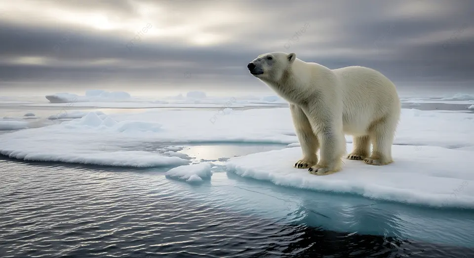

🗺️ Elegí un océano para explorar

🌊 Océano Pacífico
El más grande y profundo del mundo
📖 Descripción
El océano Pacífico es el más grande y profundo del planeta. Su nombre fue dado por el explorador Fernando de Magallanes y significa "mar en calma". Cubre más superficie que todos los continentes juntos y contiene la Fosa Mariana, el punto más profundo conocido de la Tierra.
🌟 Datos curiosos
- 🔥 Rodea el Anillo de Fuego, donde ocurre el 90% de los terremotos del mundo.
- 🏝️ Contiene más de 25,000 islas, más que cualquier otro océano.
- 🐳 Es hogar de la ballena azul, el animal más grande del planeta.
- 🦈 El tiburón blanco habita sus aguas desde hace 450 millones de años.
- 🌀 El Gran Parche de Basura del Pacífico es del tamaño de Texas.
- 🌊 Sus olas pueden alcanzar 30 metros de altura durante tormentas.
🐠 Vida marina destacada
Ballena azul, tiburón blanco, pulpo gigante, delfín mular, tortuga laúd, pez vela y calamar Humboldt.

⛵ Océano Atlántico
El océano de los grandes exploradores
📖 Descripción
El océano Atlántico es el segundo más grande del mundo y separa América de Europa y África. Fue la ruta de los grandes navegantes y exploradores durante siglos. Es el más joven geológicamente, formado hace unos 150 millones de años cuando los continentes se separaron.
🌟 Datos curiosos
- 🧭 Fue cruzado por Cristóbal Colón en 1492 en su viaje a América.
- 🌀 El misterioso Triángulo de las Bermudas está en sus aguas.
- 🌊 La Corriente del Golfo regula el clima de Europa.
- 🏔️ La Dorsal Mesoatlántica es la cadena montañosa más larga del mundo (16,000 km).
- 🚢 El Titanic descansa en su fondo a 3,800 metros de profundidad.
- 🐋 Es la ruta de migración de la ballena jorobada.
🐠 Vida marina destacada
Ballena jorobada, tiburón toro, atún rojo, tortuga boba, delfín listado, manatí del Caribe y anguila europea.

🌺 Océano Índico
El más cálido y misterioso
📖 Descripción
El océano Índico es el tercero más grande y el más cálido del planeta. Baña las costas de África, Asia, Australia y la Antártida. Sus aguas templadas favorecen una biodiversidad marina extraordinaria y albergan algunos de los arrecifes de coral más hermosos del mundo.
🌟 Datos curiosos
- 🌡️ Tiene las aguas superficiales más cálidas de todos los océanos.
- 🌊 Los monzones de Asia están directamente influenciados por él.
- 💎 Contiene las Maldivas, el archipiélago más bajo del mundo.
- 🐢 Las tortugas marinas viajan miles de km para desovar en sus playas.
- 🛢️ El 40% del petróleo mundial se transporta por sus aguas.
- 🌸 Alberga los arrecifes de coral más biodiversos del planeta.
🐠 Vida marina destacada
Tortuga verde, dugongo, pez payaso, tiburón ballena, mantarraya gigante, delfín jorobado del Indo-Pacífico y nautilo.

🐧 Océano Antártico
El más frío y ventoso del planeta
📖 Descripción
El océano Antártico (o Austral) rodea completamente la Antártida y fue reconocido oficialmente como el quinto océano en el año 2000. Es el más frío y ventoso, con vientos que pueden superar los 300 km/h. Sus corrientes únicas afectan el clima de todo el planeta.
🌟 Datos curiosos
- 🧊 Sus aguas pueden bajar a -2°C sin congelarse por la salinidad.
- 🌀 La Corriente Circumpolar Antártica es la más poderosa del mundo.
- 🌍 Sus aguas distribuyen nutrientes a todos los océanos del planeta.
- 🧊 Contiene el 90% del hielo y el 70% del agua dulce de la Tierra.
- 🦐 El krill antártico es la base de toda la cadena alimentaria polar.
- 🌬️ Registra los vientos más fuertes del planeta Tierra.
🐠 Vida marina destacada
Pingüino emperador, foca leopardo, ballena jorobada, orca, krill antártico, pez de hielo y calamar colosal.

🐻❄️ Océano Ártico
El más pequeño y amenazado
📖 Descripción
El océano Ártico es el más pequeño y superficial del mundo. Está rodeado por los continentes del hemisferio norte y permanece cubierto de hielo gran parte del año. Es el más sensible al cambio climático: su temperatura sube 4 veces más rápido que el promedio global.
🌟 Datos curiosos
- ❄️ Está cubierto de hielo marino casi todo el año.
- ☀️ En verano tiene sol las 24 horas (sol de medianoche).
- 🌡️ Se calienta 4 veces más rápido que el resto del planeta.
- 🛢️ Bajo su lecho hay el 13% de las reservas de petróleo sin descubrir del mundo.
- 🧊 Ha perdido el 40% de su hielo en los últimos 40 años.
- 🌌 Es uno de los mejores lugares para ver auroras boreales.
🐠 Vida marina destacada
Oso polar, narval, morsa, beluga, foca barbuda, zorro ártico y bacalao ártico.